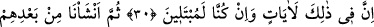
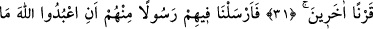
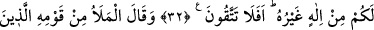
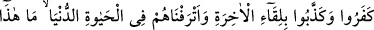
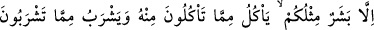
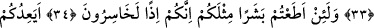
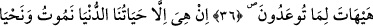
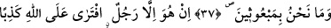
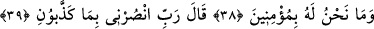
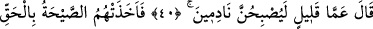
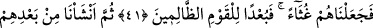
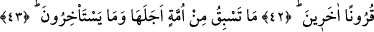
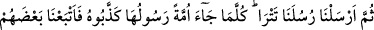
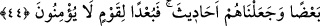
ÎMAN ETMEYEN KAVMİN
CANI CEHENNEME!
30. Şüphesiz bunda (Nuh ve kavminin başından geçenlerde) birtakım ibretler
vardır. Hakikaten biz (kullarımızı böyle) deneriz.
31. Sonra onların ardından bir başka nesil meydana getirdik.
32. Onlar arasından kendilerine: “Allah’a kulluk edin. Sizin O’ndan başka bir
ilahınız yoktur. Hâlâ Allah’tan korkmaz mısınız?” (mesajını ileten) bir peygamber
gönderdik.
33. Onun kavminden, kâfir olup ahirete ulaşmayı inkâr eden ve dünya hayatında
kendilerine refah verdiğimiz varlıklı kişiler: “Bu, sadece sizin gibi bir insandır;
sizin yediğinizden yer, sizin içtiğinizden içer.” dediler.
34. “Gerçekten, sizin gibi bir beşere itaat ederseniz, elbette ziyan edersiniz.”
35. “Size, öldüğünüz, toprak ve kemik yığını haline geldiğinizde, mutlak surette
sizin (kabirden) çıkarılacağınızı mı vâdediyor?”